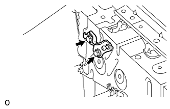

КРОНШТЕЙН КАПОТА > СНЯТИЕ |
| 1. СНИМИТЕ ЛЕВЫЙ КРОНШТЕЙН КАПОТА В СБОРЕ |
 |
С помощью отвертки снимите 2 стопорных кольца, как показано на рисунке, и затем снимите стойку капота.
| *1 | Защитная клейкая лента |
| 2. СНИМИТЕ ЛЕВЫЙ КРОНШТЕЙН ОПОРЫ КАПОТА |
|  |
Выверните 2 болта и снимите кронштейн стойки капота.